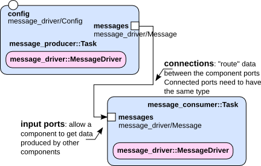

This tutorial will teach you:
The data driven component that is designed in this tutorial waits for incoming messages and outputs their content once it receives a message. The incoming messages will be produced by the producer component from the previous tutorials.
The final setup will look like:

The consumer component has already been created together with the producer component in one of the previous tutorials.
The consumer component’s part of the orogen specification (~/dev/tutorials/orogen/messages/messages.orogen) looks as follows:
task_context "Consumer" do
needs_configuration
property "config", "message_driver/Config"
input_port "messages", "message_driver/Message"
port_driven 'messages'
end
The component should allow to receive messages on an input port, and to call the updateHook only when it receives a message.
The ‘port_driven’ statement allows you to specify ports, where incoming data triggers a call to the updateHook of the task (more details in the documentation).
Update the consumer component’s header file as follows:
~/dev/tutorials/messages/tasks/Consumer.hpp:
#include <message_driver/MessageDriver.hpp>
...
class Consumer : public ConsumerBase
{
friend class ConsumerBase;
protected:
message_driver::MessageDriver *mpMessageDriver;
In the consumer component’s source file, update the constructors as follows:
~/dev/tutorials/messages/tasks/Consumer.cpp:
Consumer::Consumer(std::string const& name)
: ConsumerBase(name),
mpMessageDriver(new message_driver::MessageDriver())
{
}
Consumer::Consumer(std::string const& name, RTT::ExecutionEngine* engine)
: ConsumerBase(name, engine),
mpMessageDriver(new message_driver::MessageDriver())
{
}
Consumer::~Consumer()
{
delete mpMessageDriver;
}
In the same file, implement the updateHook, so that every incoming message is printed to stdout, using the existing printMessage function of your ‘message_driver’ library.
void Consumer::updateHook()
{
ConsumerBase::updateHook();
message_driver::Message message;
_messages.read(message);
mpMessageDriver->printMessage(message);
}
Build your component with ‘amake’.
You have designed a component that produces messages and a component that consumes messages. To connect them, you will use the Ruby scripting interface. Create a file connect.rb in your component’s script folder (~/dev/tutorials/orogen/messages/scripts) with the following content:
require 'orocos'
require 'readline'
include Orocos
Orocos.initialize
Orocos.run 'messages::Producer' => 'message_producer',
'messages::Consumer' => 'message_consumer' do
message_producer = Orocos.name_service.get 'message_producer'
message_consumer = Orocos.name_service.get 'message_consumer'
# Never assume that a component supports being reconnected
# at runtime, it might not be the case
#
# If you have the choice, connect before the component is
# even configured
message_producer.messages.connect_to message_consumer.messages
message_producer.configure
message_producer.start
message_consumer.configure
message_consumer.start
Readline::readline("Press ENTER to exit\n")
end
The call to ‘connect_to’ for an output port allows you to connect it with an input port. By default, a data connection is created, but you can also specify the type of your connection explicitly. Check the documentation for more details on that topic.
Run your ruby script
ruby connect.rb
If everything has been done correctly, you will eventually see the consumer printing messages to the console, in the periodicity you set on the message producer:
[20110803-10:59:55:068] Message from MessageDriver
[20110803-10:59:56:068] Message from MessageDriver
[20110803-10:59:57:068] Message from MessageDriver
[20110803-10:59:58:068] Message from MessageDriver
Press ENTER to shut your script down – the script does the cleanup itself once it leaves the Orocos.run block.
In this tutorial, you have learned to:
Progress to the next tutorial.